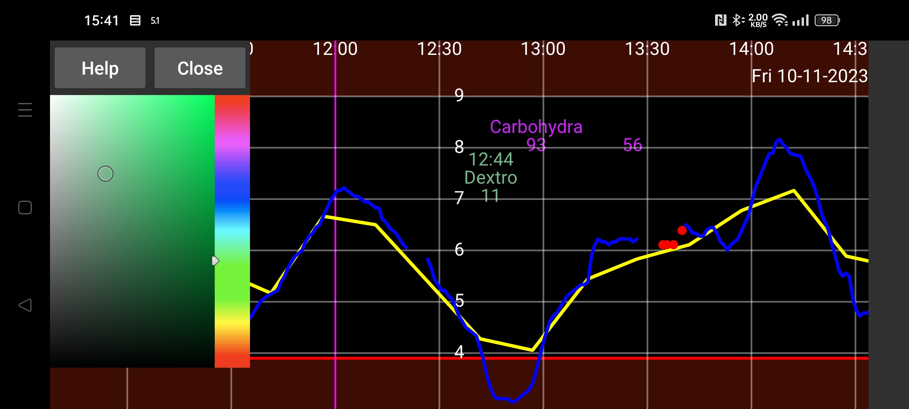

ar be de es fr it nl pl pt ru sv tr uk zh en
Здесь вы можете изменить цвета цифр, кривых и точек сканирования. Коснитесь точки, кривой, данных сканирования или величины (чтобы отобразилась информация об установленном цвете для этой точки или величины). В дальнейшем коснитесь цвета в цветовой палитре. Кривая, точка сканирования или величина теперь будут отображаться этим цветом.
В WearOS нужны
часы с клавишей назад, свайп
не выполнит действие
”назад”.
Будьте внимательны